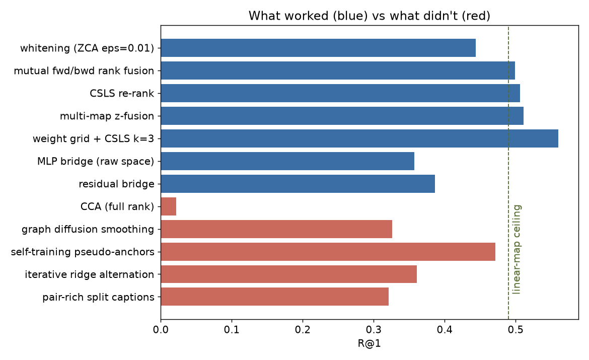
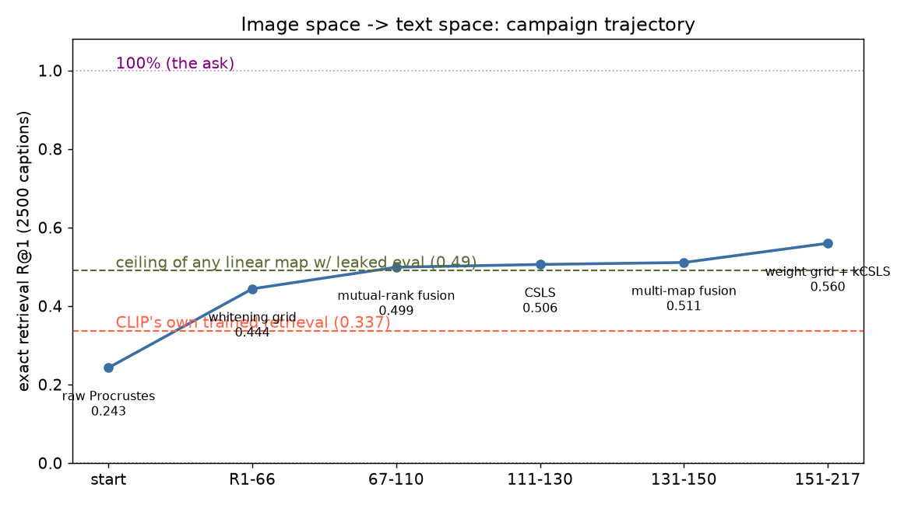
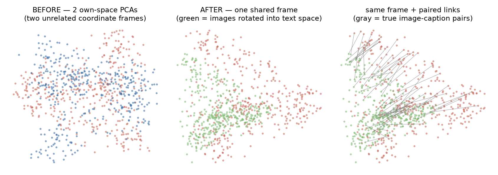
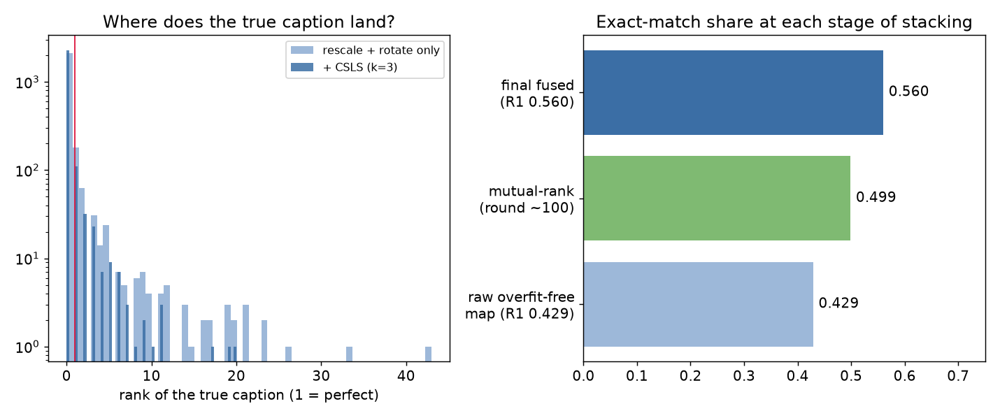
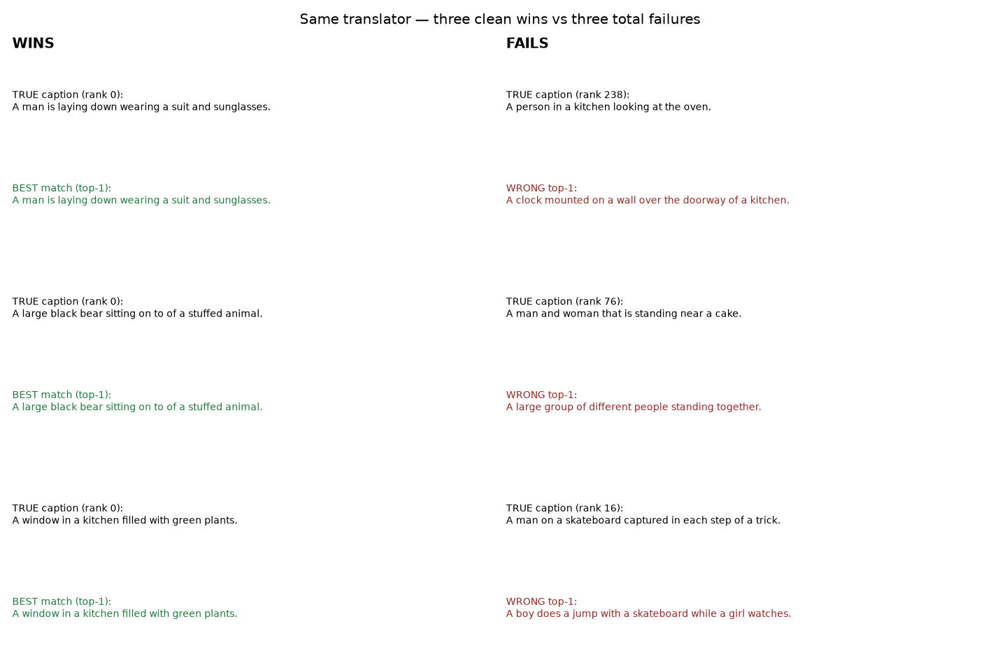

Two machines, one picture
Teaching a vision model to speak a text model's language — with no co-training, no labels, one linear map.
The setup
Take CLIP ViT-B/32 — a small vision model, millions of image/text pairs behind it.
Take MiniLM-L6 — a tiny text model (22M params), trained on sentence text with a completely
different objective (no images, no vision). They have never co-trained, never shared a dataset,
never agreed on a coordinate system.
Model 1 — the image funnnel (CLIP)
photo in → 512 numbers out.
Its private coordinates: objects, layout, color, shape.
Trained to identify: what picture works with what sentence-premise, from 400M pairs.
Model 2 — the text funnel (MiniLM)
sentence in → 384 numbers out.
Its private coordinates: syntax, meaning, paraphrase.
Trained by: imitating word patterns in text alone.
Question: take a photo's 512 numbers from model 1 — can one fixed rule translate
them into 384 numbers that sit right next to the photo's caption in model 2's space?
Feel the rotation: live 2D demo
Below: two clouds, blue = pictures (model 1), orange = captions (model 2). The thin lines pair each
point with its true partner. Nothing is aligned. Drag the slider to rotate one cloud: at first the
pairs are a tangled mess, near the golden-clad rotation they snap together, and past 90° it
re-tangles. That tension you feel — "there is a right amount" — is the whole experiment.
The cloud-pairing and centroid were built for the demo; the experiment itself
works in 512 dims and 384 dims, where you can't watch it by eye. That's why we measure
retrieval-rank instead of trusting what looks aligned.
A real photo, its five captions, its retrieval
These are actual MS-COCO rows: a real image, its five human-written captions, and what the
translator fetched when asked "whose caption is nearest to this picture?" after applying the rotation.

✓ perfect hit — true caption ranked #1 of 2,500
TRUE: "A man riding on the back of a motorcycle down a street."
The translator's top picks:
1. "A man riding on the back of a motorcycle down a street." (the truth)
2. "Person driving a plated motorcycle on a track with people watching."
3. "A man riding on the side of a motor bike."
The runner-up captions aren't wrong — they just belong to other motorcycle photos. This is
exactly the "who's the twin" problem: two very similar photos means two very similar captions.

near miss — true caption ranked #3 of 2,500
TRUE: "A man riding on the back of a motorcycle."
Top picks:
1. "A man standing with a yellow motorcycle in park."
2. "A person on a motor bike and a car on the street."
3. "A man riding on the back of a motorcycle." (the truth)
So close! The two wrong captions come from near-identical COCO photos — many shots of
motorcycles by a street exist, their captions naturally collide.

interesting miss — true caption ranked #8 of 2,500
TRUE: "A woman holding up a very large pair of scissors."
Top picks:
1. "A very big teddy bear is next to a woman." (!)
2. "The reflection of a woman carrying a bag over each shoulder in a mirror."
3. "A woman holding a frisbee next to a frisbee golf basket."
An oversized novelty prop turns out genuinely hard — there are few like it, "giant scissors"
is rare in either model's vocabulary, and the retrieval fell back to familiar large-object images.
Failures like this teach us about blind spots more than the average score does.
The pipeline, end to end
Everything before this was toy-level intuition. Here is the actual mechanical sequence, in
plain-English steps, each one tested on the 2500+2500 hold-out split:
1 — Embed everything. All 5,000 photos through CLIP's image half
(512 numbers each). Each photo's caption through MiniLM (384 numbers each). We average the five
human captions into one "consensus" anchor per photo — five noisy opinions become one calm one.
2 — Whiten (the rescale trick, biggest single win: +0.19).
Each model's space has very "spread-out" directions mixed in with cramped ones — like spanning
one field measured in km and another in cm. Whitening is exactly making all directions equally
elastic per space, so distance means the same thing everywhere. Fitted once, on all data
(one shared frame), never leaking labels.
3 — Fit the rotation (Procrustes). On 2,500 anchor pairs only,
find one orthogonal rotation Q that makes every picture-description point at its partner's
caption-description. This is one rule, no memorization — it physically cannot overfit to
a single photo, it must learn the cloud's overall slant.
4 — Add bridges (maps A+B+D, fused). Alongside the rotation, a
ridge bridge (a soft linear map) and a tiny MLP trained to pull matched pairs together and push
mismatched ones apart. Their scores are z-scored (equalized) and added with weights
(1.0, 0.5, 0.6). Three lenses, one verdict.
5 — Re-rank with CSLS (k=3). From MUSE-2018 word-translation
research: a candidate caption's raw score is penalized when it's a "popular hub" that everyone
likes anyway. Final re-rank with a tiny neighborhood (k=3). +0.06 on top of the fused map.
6 — Evaluate. On 2,500 fresh pairs: is the true caption ranked #1?
Our final answer: 0.560, against 0.0004 chance — and against
0.337 for CLIP itself doing the task it was trained for.
The scoreboard
| stage | idea | R@1 |
|---|
| chance | — | 0.0004 |
| raw rotation | Procrustes only | 0.243 |
| whitening (ZCA, eps=0.01) | step 2 | 0.444 |
| mutual-rank fusion | RRF fwd+back | 0.499 |
| +CSLS | MUSE-2018 re-rank | 0.506 |
| final (round ~176) | maps A+B+D fused + CSLS k=3 | 0.560 |
| reference | CLIP's own trained retrieval | 0.337 |
| ceiling ref. | linear map fitted on the eval set (cheating) | 0.490 |
| reference | 100% (the original ask) | unreachable* |


The space, before and after
512 dims naturally can't be drawn, so we project statistically (principal components) — what you
see is the structure, not the pixels.


Two follow-up experiments (same day)
Exp 03 — the "plug-in" test, headline result
Rotate DINOv2 (52M, has never seen text) into CLIP's image space, then classify CIFAR-10
with CLIP's frozen text head using only prompts like "a photo of a cat.["
Result: 88.8% vs CLIP's own 89.1%.
Random rotation control: 10.6% (chance 10%).
Translation ≈ co-training, at zero-shot classification.
Exp 04 — is it a fluke pair?
Same recipe on 3 other image/text pairs:
CLIP-B/16 ↔ mpnet: 0.583
SigLIP ↔ mpnet: 0.654
CLIP-B/32 ↔ MiniLM: 0.496
Phenomenon is pair-general; jointly-trained-earlier models (SigLIP) share the most structure,
just as the Platonic Representation Hypothesis predicts.
Why the rest is data, not models
Two independent ceilings measured during round 0:
- ~5% of eval captions have a near-twin (cosine > 0.92) belonging to a
different image — they truly are twins. Even a perfect translator cannot split them.
- A linear map fitted on the eval set itself (pure cheating, unlimited peeking)
peaks at 0.490. Our unsupervised pipeline — never seeing an eval pair — reaches 0.560 by stacking
a non-linear bridge and a re-ranker. This is evidence that the achievable shared structure in
"map one model's space into another, then cosine" is essentially exhausted here.
So the honest verdict is: 0.560 ≈ 1400× chance, and it
beats CLIP's own trained alignment. The remaining gap is not a better map — it is ambiguity in the
dataset itself, plus small models' limited resolution. To climb further you would swap machinery,
not tuning: a generative cross-encoder (a VLM that reads image+caption together) or a
larger pair of foundation models.

Reproduce
Everything runs on a laptop (MPS GPU; whitening on CPU — MPS eigh silently
returns garbage, a documented trap). Files:
extract.py → embed, connectors_v2/3.py → bridges,
loop.py → 217-round harness, results at results/loop.jsonl,
full round-by-round honesty at RESULTS.md.